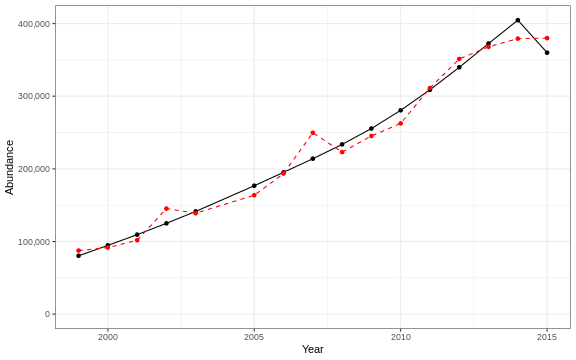

3.1 Abundance
3.1.1 Generalized linear model
This is an exploratory fit of a poisson GLM. Initial covariates were included based on statistical significance at a Bonferroni-corrected alpha in the linear correlations shown in this report. Final covariates were chosen by forward stepwise AIC selection of additive GLMs.
| rnames | Estimate | Std. Error | z value | Pr(>|z|) |
|---|---|---|---|---|
| (Intercept) | 101 | 5.52 | 18.2 | 3.95e-74 |
| WEEKLY CHLOR A RATIO ANOMALY week 46 |
2.39 | 0.0672 | 35.5 | 1.89e-276 |
| WEEKLY CHLOR A RATIO ANOMALY week 01 |
-0.778 | 0.066 | -11.8 | 5.09e-32 |
| Warm Core Rings n | 0.00398 | 0.00128 | 3.11 | 0.00186 |
| ANNUAL CHLOR A RATIO ANOMALY |
6.44 | 0.207 | 31.1 | 5.73e-213 |
| fall OI SST Anomaly degreesC |
0.963 | 0.0357 | 27 | 1.4e-160 |
| summer OI SST Anomaly stock degreesC |
0.467 | 0.00239 | 196 | 0 |
| fall OI SST Anomaly stock degreesC |
-2.86 | 0.07 | -40.9 | 0 |
| WEEKLY CHLOR A RATIO ANOMALY week 47 |
2.21 | 0.0924 | 23.9 | 3.93e-126 |
| WEEKLY CHLOR A MEDIAN week 46 mg m 3 |
-0.169 | 0.0537 | -3.15 | 0.00166 |
| Longitude degreesW | 1.37 | 0.0802 | 17.1 | 2.05e-65 |
| MONTHLY CHLOR A RATIO ANOMALY month 11 |
-6.12 | 0.29 | -21.1 | 2.91e-99 |
| cumulative intensity stock degrees C annual mean |
0.00153 | 4.1e-05 | 37.4 | 6.71e-306 |
| WEEKLY CHLOR A MEDIAN week 50 mg m 3 |
-1.12 | 0.0556 | -20.1 | 8.06e-90 |
| MONTHLY CHLOR A MEDIAN month 11 mg m 3 |
4.62 | 0.255 | 18.1 | 1.52e-73 |
| WEEKLY CHLOR A MEDIAN week 47 mg m 3 |
0.108 | 0.00867 | 12.5 | 8.86e-36 |
Dropped coefficients:
